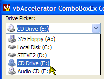

VB5 ComboBoxEx Control (28K)
VB5 ComboBoxEx Control (28K)
 VB5 ComboBoxEx Demonstration (38K)
VB5 ComboBoxEx Demonstration (38K)
 VB5 ComboBoxEx Full Source (94K)
VB5 ComboBoxEx Full Source (94K)
 VB6 ComboBoxEx Control (28K)
VB6 ComboBoxEx Control (28K)
 VB6 ComboBoxEx Demonstration (34K)
VB6 ComboBoxEx Demonstration (34K)
 VB6 ComboBoxEx Full Source (91K)
VB6 ComboBoxEx Full Source (91K)
 Bugs: 1 / 2
Bugs: 1 / 2
 Issues: 0 / 0
Issues: 0 / 0
 Questions: 0 / 0
Questions: 0 / 0
 26 Jan 2003
26 Jan 2003
Updated WM_CTLCOLOR.. processing so the control renders correctly with an XP Manifest.
Added missing mnubar.bmp to download.
 Subclassing Without The Crashes
Subclassing Without The Crashes
 Owner Draw Combo and List Boxes Version 2.1
Owner Draw Combo and List Boxes Version 2.1
 Ole Guid and interface definitions (OleGuids.Tlb)
Ole Guid and interface definitions (OleGuids.Tlb)

vbAccelerator ComboBoxEx Control
A full implementation of the ComCtl32 ComboBoxEx Control directly from the API with Owner Draw Features
 This article presents an implementation of the Common Controls ComboBoxEx control from scratch in Visual Basic. Although this control is available with some versions of VB, this version provides a number of enhancements including pre-built styles (drive picking, font picking, colour picking) and helper such as auto-completion. And you get the full source code to play around with!Basics
The interface to the ComboBoxEx control is very similar to the VB ComboBox control. Standard methods such as AddItem, Clear, ListCount, List, ItemData and so on are all supported in exactly the same way as for the VB control. The ComboBoxEx control also allows you to associated up to two icons with each ListItem from an ImageList, and this version also allows you complete control over drawing your own ListItems using Owner Draw styles.
Adding Icons
To add icons, first set the ImageList property. The ImageList passed in must be a ComCtl32.DLL compatible image list, which means that you can either use a VB5 ComCtl32.OCX ImageList or any of the vbAccelerator ImageLists (such as the vbAccelerator ImageList Control, ImageList Class and System ImageList class). Unfortunately the VB6 MSComCtl.OCX ImageList is not compatible with ComCtl32.DLL and hence won't work. There is a workaround for this, but it isn't pretty. You basically need to copy all of the images from the MSComCtl.OCX image list into a vbAccelerator ImageList class.
Once you've configured an appropriate the ImageList, use the ItemIcon or ItemIconSelected properties to associate the image with your control. These properties accept and return a zero-based index to the icon within the ImageList. If you don't set the ItemIconSelected property, then the ItemIcon will still be used when the item is selected.
Controlling Styles
There are three properties for controlling the style of the control:
- Style
- ExtendedStyle
- DrawStyle
The Style property is the same as the standard VB ComboBox one, so the other styles are covered next:
ExtendedStyle
This property allows you to set or remove the three extended properties provided by the ComboBoxEx control at design-time or run-time:
- CBES_EX_NOEDITIMAGE
Gets/sets whether the icon for the selected item appears in the edit box or not. - CBES_EX_NOEDITIMAGEINDENT
Gets/sets whether the text in the edit box is indented to provide space for the icon of the selected item. - CBES_EX_CASESENSITIVE
Gets/sets whether searches on the text in the edit box are case sensitive or not.
DrawStyle
This property changes the style the control uses to draws, at design-time or at run-time. There are 9 pre-built styles:
- eccxDrawDefault
- eccxDrawDefaultThenClient
Draws the ComboBoxEs using the default style, then raises a DrawItem event. This allows you to add to the existing style by drawing on the device handle returned - eccxDrawODCboList
- eccxDrawODCboListThenClient
Same as eccxDrawODCboList but raises a DrawItem event once the control has finished drawing. - eccxOwnerDraw
The control performs no drawing, allowing you to draw your own custom items in the Combo Box. - eccxColourPickerWithNames
Draws a colour picker control with a small box showing a sample of the colour and the name of the colour to the left. The colour to draw is specified in the ItemData property of the ListItem and the name of the colour is specified by the Text property. - eccxColourPickerNoNames
Same as eccxColourPickerWithNames except the colour sample extends the width of the Combo Box. - eccxSysColourPicker
Similar to eccxColourPickerWithNames except preloads the combo box with the System colours. - eccxFontPicker
Loads the system fonts into the control and displays them along with an icon indicating the type of the font (true-type, clear-type etc). - eccxDriveList
Loads the system drives into the control and sets the appropriate icons.
Other Properties and Methods
- ComboIsDropped
Gets whether the combo list portion of the control is dropped down. - DoAutoComplete
Specifies whether text typed into the edit portion of the combo box is auto-matched against items in the control. When this flag is set, you can customise the behaviour of the auto-completion by setting the AutoCompleteItemsAreSorted and AutoCompleteListItemsOnly properties. AutoCompleteItemsAreSorted enables auto-complete to work faster if you know the list is sorted, whilst AutoCompleteListItemsOnly means an item will only be selected if the text is a match for an item in the box. - FindItemIndex
Finds the specified string, using exact matching if required. The find can be case-sensitive or case-insensitive depending on the setting of the ExtendedStyle flag CBES_EX_CASESENSITIVE. - ShowDropDown
Allows you to programmatically drop-down the combo box. - Sorted
Same as the VB ComboBox sorted method, except it can be changed at run-time.
Wrap-Up
The ComboBoxEx control is a simple way of adding icon ComboBoxes to your application, and makes life particularly easy if you want to implement a Drive, Font or Colour picker. If you are prepared to delve into the GDI world, you can also create your own completely customised ComboBox controls, although note that you cannot modify the height of an item in the ComboBox. To achieve combo box items with variable heights, you need to use a standard ComboBox control with Owner-Draw mode set - see the vbAccelerator OwnerDraw Combo and ListBox Control for details of how to achieve this.